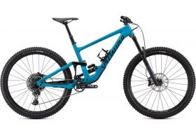

No matter where you ride, why you ride, or who you ride with, there’s a product for every ride on bala Cycle Depot. Whether you're a beginner rider or seasoned racer, our online bike shop has everything you need, including the latest electric bikes, mountain bikes and road bikes. Take the road less travelled and hit the dirt on a gravel bike, or take to the start line on a cyclocross bike and if you’re just looking for a reliable run-around check out our hybrid and city bikes. We haven’t forgotten about the little ripper in your life! We have a huge selection of BMX bikes and kids bikes to introduce them to the sport. Bala Cycle Depot is there For Every Ride.
Looking for a new bike? There’s probably never been a better time to buy one. In the past decade, bikes have gotten more functional, more reliable, and more fun to ride. That’s partly because the variety has bloomed from a few basic styles (e.g. road, mountain, city) to now include all manner of niches and categories-within-categories, as bike makers diversify their offerings to appeal to the many ways that people enjoy riding.
But that profusion of options presents you, the eager buyer, with a challenge: We sell a wide variety of bikes online. Bala Cycle Depot is there For Every Ride. How do you know which kind of bike is right for you and the riding you’ll do? Well, that’s what this guide is for. Use the handy quick-reference section up top to narrow down between broad categories, then jump down to learn about different options within those.
Road bikes
As the name suggests, road bikes are designed to ride on the road. They absolutely can. But road bikes are optimised to make road cycling as efficient as possible, and because of that they’d perform terribly on a mountain dirt track.
Mountain Bikes
Mountain bikes are designed to go on mountains or on off-road trails, which means they’re chunkier, have knobbly tyres on them, and a frame geometry which makes them better suited for seriously uneven terrain.
Electric Bikes
Also simply known as ‘Cross Bikes’, these are bikes which follow the tradition of road cyclists in the olden days, who would swap their slick road tyres for knobblier tyres and continue to train during the winter months.